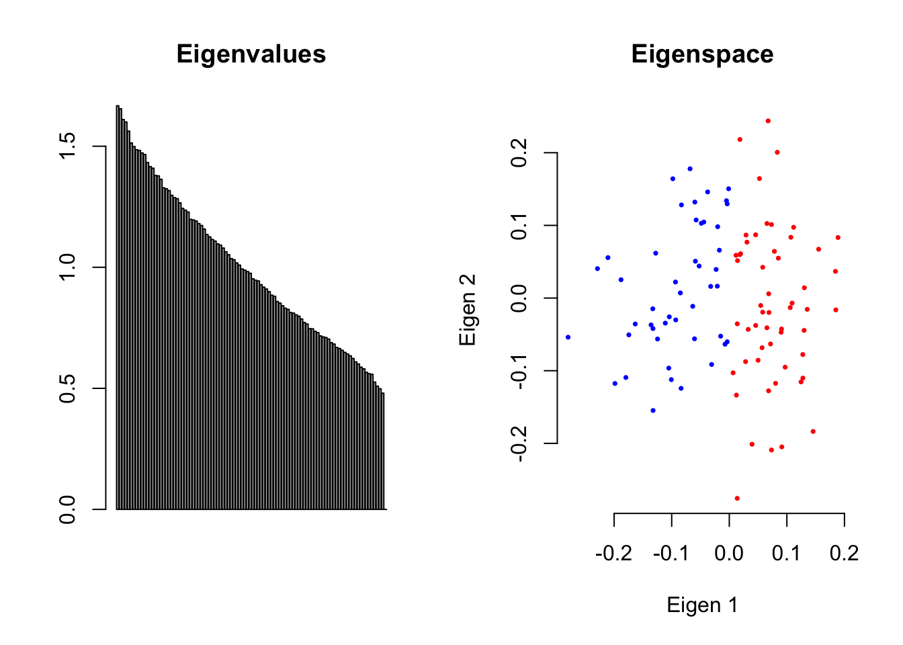
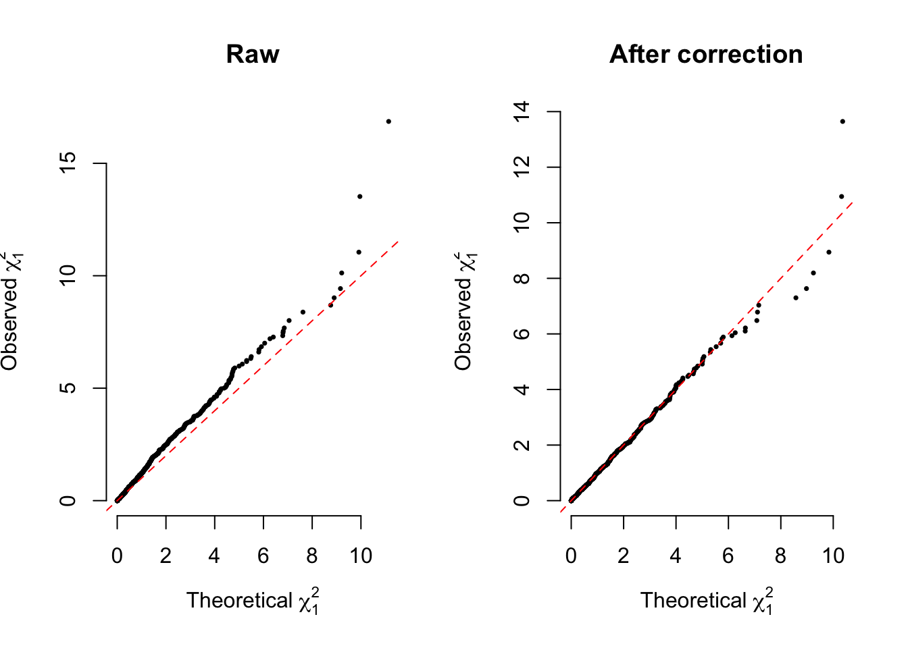

EigenGWAS theory and application
2018-12-03
Chapter 1 EigenGWAS basis
This project is dedicated to EigenGWAS, a linear model analysis approach for genomic data.
EigenGWAS can be seamlessly applied to the steps after STRUCTRURE and principal component analysis. In a nutshell, it regresses the eigenvector agaist each SNP, an analysis that finds the loci under selection. It analysis pipeline may be found at pipeline.
1.2 EigenGWAS linear model
Given eigenanalysis (see wikipedia for its more details) of \(\mathbf{X}\), we have \(\mathbf{E}\) and \(\mathbf{\Lambda}\), in which \(\mathbf{\Lambda}\) is an \(n \times n\) diagonal matrix for eigenvalues and \(\mathbf{E}\) is an \(n \times n\) matrix for the eigenvectors. \(\mathbf{E}_k\) is the \(k^{th}\) eigenvector associated with the \(k^{th}\) largest eigenvalue. Regressing \(\mathbf{E}_k\) against the \(l^{th}\) marker, we have the model below
\[\begin{equation} \mathbf{E}_k=a+\beta_l\mathbf{x}_l+e \tag{1.6} \end{equation}\]
It consequently generates \(m\) estimates of \(\hat{\beta}\), \(\hat{\sigma}_{\beta}\), and their corresponding \(p\) values. The \(p\) value can be converted to one-degree-of-freedom \(\chi^2_1\). Under the context of EigenGWAS, the \(\chi^2_1\) can be intepreted as
\[\begin{equation} 4\frac{\color{red}{n_1}\color{blue}{n_2}}{n}\frac{(\color{red}{p_{1,l}}-\color{blue}{p_{2,l}})^2}{2p_lq_l}=4n\omega_1 \omega_2 F_{st}^N=nF_{st}^W \tag{1.7} \end{equation}\]
in which \(\color{red}{n_1}\) and \(\color{blue}{n_2}\) are the numbers of samples at the left and right side of “0” on the eigenvector (see the figure below), and \(\omega_g=\frac{n_g}{n}\) the proportion of a subgroup in the sample (\(g=2\) in EigenGWAS analysis), and \(\color{red}{p_{1,l}}\) and \(\color{blue}{p_{2,l}}\) are the frequencies of the reference allele in two subgroups, respectively. \(F_{st}^N=\frac{(\color{red}{p_{1,l}}-\color{blue}{p_{2,l}})^2}{2p_lq_l}\) and \(F_{st}^W=2\frac{\sum_{g=1}^2\omega_g(p_{g,l}-p_l)^2}{p_lq_l}\). It is obviously that when \(n_1=n_2=\frac{n}{2}\) the test statistic reaches its maximum.
## [1] 100 1000
## [1] "Ne= 100 Me= 1080.91076380488 given N= 100 and M= 1000"
1.2.1 \(\lambda_{GC}\) correction
Given the median, denoted as \(\chi^2_{1,median(p)}\), of the \(m\) \(\chi^2_1\) values observed, we can define \(\lambda_{GC}=\chi^2_{1,median(p)}/\chi^2_{1,0.5}\), in which \(\chi^2_{1,0.5}=0.455\). We further use subscript \(k\) to denote \(\lambda_{GC_k}\) the one that is estimated from the EigenGWAS analysis of \(\mathbf{E}_k\), as shown (1.6).
After technical correction, correspondingly
\[\begin{equation} \tilde\chi^2_1=\chi^2_1/\lambda_{GC_k} \tag{1.8} \end{equation}\]
a correction of the test statistic. Compared with its original form, the correction has several implications
Statistically, as (1.6) has its response variable from \(\mathbf{X}\), the correction removes its overfitting.
Genetically, it corrects for genetic drift such as soaked in \(\mathbf{E}_1\). Here the quantity of the genetic drift is measured by the median of the \(m\) \(\chi^2_1\) values observed.
\(\lambda_{GC}\) parameter has long been proposed in controlling population structure in GWAS, but finds its best fit in
EigenGWAS.

1.2.2 Threshold for EigenGWAS
As shown above, EigenGWAS is a linear model framework nearly identical to the conventional GWAS, and Bonferroni correction, such as \(\alpha/m\), can be used to set the threshold at the significance level \(\alpha\), such as \(\alpha=0.05\). The loci that exceeds the threshold are under selection.
1.3 Connection to singular value decomposition
Singular value decomposition ((see wiki for more details](https://en.wikipedia.org/wiki/Singular_value_decomposition)) can decompose the matrix \(\mathbf{X}\) into \[\begin{equation} \mathbf{X}=\mathbf{U\Sigma V} \tag{1.9} \end{equation}\] in which
\(\mathbf{U}\) is an \(n\times n\) unitary matrix, corresponding to individual-level loading for each sample. \(\mathbf{U}\) is also called left-singular vectors.
\(\mathbf{\Sigma}\) an \(n\times m\) diagonal matrix,
\(\mathbf{V}\) an \(m\times m\) unitary matrix, corresponding to SNP-level loading. \(\mathbf{U}\) is also called right-singular vectors.
Due to the transformation between \(\mathbf{U}\) and \(\mathbf{V}\), it has \[\begin{equation} \mathbf{U}=\mathbf{\tilde{X}V\Sigma}^{-1} \tag{1.10} \end{equation}\] The right side of (1.10) can be unfolded as \(\frac{\sqrt{m}}{\sqrt{\Sigma_k}}\mathbf{\tilde{x}}_l\mathbf{v}_k\), following \(N(0,1)\), and taking square of it leads to
\[\begin{equation} (\frac{\sqrt{m}}{\sqrt{\Sigma_k}}\mathbf{\tilde{x}}_l\mathbf{v}_k)^2 \sim \tilde{\chi}^2_{1,svd} \tag{1.11} \end{equation}\]
It brings out an interesting comparison between (1.8) and (1.10), and exists subtle difference, for instance \(E_1\), in their correction using \(\lambda_{GC}\) and \(\Sigma_1\). When the population divergency is due to genetic drift and a small proportion of loci are under selection, \(\Sigma_1 \gt \lambda_{GC}\). It is because \(\Sigma_1\) is the mean of the \(\chi^2_1\) from (1.7), but \(\lambda_{GC}\) is the median of it. Given a population under selection, such as selection sweep, it does have \(\Sigma_1 \gt \lambda_{GC}\), as demonstrated in simulation.
So, using linear model system such as EigenGWAS brings more flexibility, as well as improved statistical power comparing with direct left-to-right singular vector transformation in SVD (1.10).
However, in this transformation, eigenvalue is involved, as would be show. It will reduce the statistical power for EigenGWAS. In theory and practice, with type-I error rate well-controlled, \(\tilde{\chi}^2_1\) (1.8) is greater than \(\tilde{\chi}^2_{1.svd}\) (1.10).
1.4 Intepretation
1.4.1 \(F_{st}\)
EigenGWAS provides an unsupervised realization for \(F_{st}\) the conventional implementation of that assumes the underlying subgroups are known. In practice, however, it is often unclear how the possible subgroups should be defined. In contrast, EigenGWAS implicitly partitions the samples into two subgroups at each eigenvector at zero point on the coordinate. No guarantee that this strategy optimal, it seems a sound attempt when the group information is missing.
1.4.2 Classic mechanic intepretation
The early framework of population genetics indebts a lot for theoretical physics (Ronald Fisher studied astronomy). As a linear model system, EigenGWAS also finds its analogue in Newtown’s first and the second laws for classical mechanics. The first law states
“In an inertial frame of reference, an object either remains at rest or continues to move at a constant velocity, unless acted upon by a force.”
In population genetics, it can be seemed as genetic drift that is constantly driving the a pair of population apart from each other, and its velocity can be quantified by a binomial distribution as \(\frac{pq}{\tilde{n}_e}\).
The second law stats
“In an inertial frame of reference, the vector sum of the forces \(F\) on an object is equal to the mass m of that object multiplied by the acceleration a of the object: \(F = ma\).”
The selection can drive a genomic region run against its reference population at a velocity greater than \(\frac{pq}{\tilde{n}_e}\).
Although, this interpretation works even for domesticated populations, its proportion of the markers divergent by genetic drift and selection would be very different.